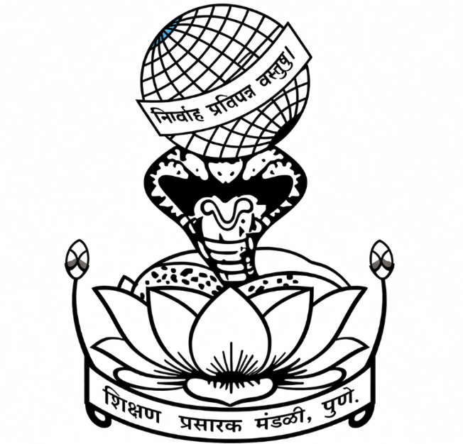
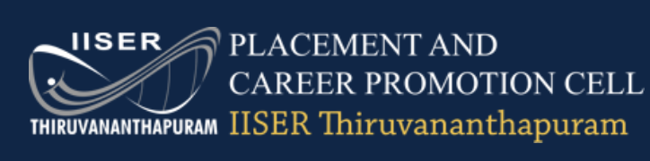
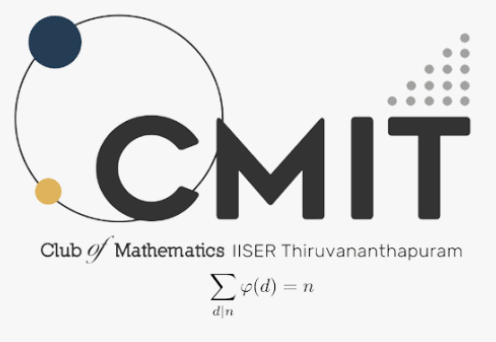
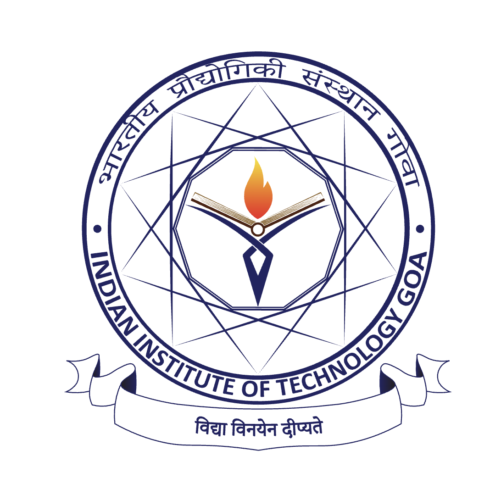
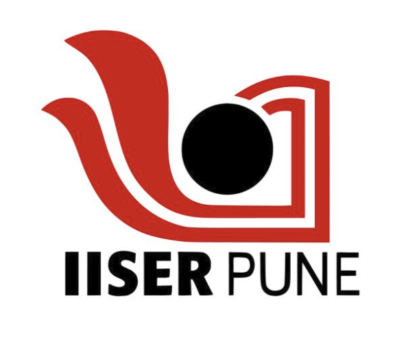

About Me
Department of Science & Technology (DST), Government of India — INSPIRE Scholar
Data Science | Bayesian Statistics | Network Science | Bioinformatics | Biostatistics
Hi, I'm Maitreya! I'm a BS-MS Data Science student at IISER Thiruvananthapuram, where I spend most of my time on Bayesian statistics, probabilistic modeling, and network science. I like building principled models for messy, high-dimensional data — especially single-cell genomics like scRNA-seq and scATAC-seq. I am also grateful to be an INSPIRE SHE Scholar! Lately I've been most excited about Bayesian inference, unsupervised feature selection, and applying probabilistic models to real-world data for better interpretability. I've been lucky to do research internships at premier institutes like IIT Goa, IISER Pune, and IISER Thiruvananthapuram, working on everything from Poisson mixture models, Bayesian statistics and Bioinformatics to Network sciecne and real-life Optimization problems using Data Warehousing techniques. Outside of research, I'm a Tabla artist, a footballer, Math enthusiast and a lifelong fan of Hindustani classical music. On campus I'm the Student Placement Coordinator and the spokesperson for the Music Club. Feel free to look around, and reach out any time — you can find me on LinkedIn, GitHub, or over Email.
Currently working on :
Unsupervised Feature Selection for Genes
IIT Goa · Under Dr. Clint P. George
Developing unsupervised feature selection methods for gene-level data, with a focus on identifying informative biological features without relying on predefined labels.
Research paper preprint currently under writing.
Estimation of Selected Parameters for Inverse Gaussian
Under Dr. Md. Masihuddin
Ongoing major project focused on the estimation of selected parameters of the Inverse Gaussian distribution.
Ongoing Major Project
Education
BS-MS (Dual Degree), Data Science Major
IISER Thiruvananthapuram
Aug 2023 – Present
Currently pursuing an BSMS program in Data Science, building a strong foundation in statistical modeling, machine learning algorithms, mathematics, and computational techniques.
| Semester | SGPA |
|---|---|
| Semester 1 | 8.81 |
| Semester 2 | 9.00 |
| Semester 3 | 8.87 |
| Semester 4 | 9.57 |
| Semester 5 | 9.32 |
| Semester 6 | 9.71 |
CGPA till date: 9.21

Higher Secondary Education (Science Stream)
Sir Parshurambhau College, Pune
Aug 2021 – May 2023
Secured 92.5% in MSBSHSE Board Science-Stream Exams and completed higher secondary education with a focus on Physics, Chemistry, Mathematics, and Biology, PE, German, Environmental Sciences and English literature. Secured 5th overall rank in college, 2nd rank in science stream. Got awarded with SP College Merit Scholarship; along with INSPIRE-SHE Scholarship from Government of India.
Matriculation (SSC)
Sevasadan English Medium School, Pune
June 2008 – March 2021
Secured 95% in Class X CBSE Board Exams.
Experience

Placement and Career Promotion Cell
IISER Thiruvananthapuram
As Student Coordinator, I reached out to and brought many startups and established companies to campus for placement opportunities, bridging the gap between industry and academia. I also conducted sessions for juniors — including CV building, interview preparation, and career guidance — to help them navigate placements and secure internships. Furthermore, I completely restructured the Placement Cell's organizational hierarchy and expanded its scale by approximately fivefold. Established connections with organizations including TCS, Deloitte, SciAstra, Tallento.ai, Skillairo, and others. On an averge, atleast 4 internship or PhD opportunities and being facilitated each month. Contributed to the planning and execution of placement drives and pre-placement talks. Initiated collaborations and discussions with Placement Cells at other IISERs and NISER to explore strategies for strengthening placement opportunities, particularly within research-oriented institutions.
KerNeL — Offical Data Science Departmental Club
IISER Thiruvananthapuram
Was selected as the primary coordinator for KerNeL, the official Data Science departmental club at IISER Thiruvananthapuram, which emphasizes the research-oriented aspects of Data Science alongside its applications. Currently serving as Core Coordinator and Head of Events Team, with responsibilities spanning the planning and execution of academic events and hands-on sessions, as well as coordination of merchandise and financial activities.
Learn more about KerNeL: dsciisertvm.netlify.app
Music Club
IISER Thiruvananthapuram
Served as spokesperson and a member of the club's decision-making committee. Organized jamming sessions, coordinated performances like ISHYA, and managed logistics for major cultural events including IICM 2025, while actively performing Tabla at campus events.

Club of Mathematics, IISER Thiruvananthapuram (CMIT)
IISER Thiruvananthapuram
Managed merchandise financing and provided key administrative support during the prestigious Frontier Symposium in Mathematics, 2023, ensuring smooth financial operations and successful event execution.
Research & Projects
I enjoy building statistically rigorous methods for challenging real-world problems. My research spans Bayesian inference, probabilistic modeling, computational biology, network science, and machine learning ! Explore the projects below to learn more about my work :)
Indian Institute of Science Education and Research, Thiruvananthapuram
Estimation of Selected Parameters for Inverse Gaussian
Under Dr. Md. Masihuddin · Ongoing Major Project
Ongoing major project focused on the estimation of selected parameters of the Inverse Gaussian distribution, for different types of populations.
Cryptography-Based Secure Machine Learning Model Service with KEM-Based Secure Communication
Under Dr. Laltu Sardar · Course Project · Ongoing
Currently working on a course project involving a secure machine learning model service with KEM-based secure communication, combining concepts from cryptography, machine learning, and secure communication protocols.
Community Detection & Network Analysis
Under Dr. Saptarshi Bej · Dec 2024
Applied modularity-based clustering across diverse complex networks — neural pathways, protein-protein interactions, and infrastructure (road) systems — using NetworkX and graph theory. Optimized community partitioning to reveal underlying topological structure and visualized the resulting network properties.
Design and Analysis of Experiments
Under Prof. Priyanka Majumder · Dec 2025
Mastered core experimental design methodologies — RCBD, Latin Square, and factorial designs — to structure robust randomized clinical trials. Applied mathematical statistics to model trial outcomes while minimizing the impact of confounding variables, ensuring statistically rigorous and reproducible results.

Indian Institute of Technology (IIT), Goa
Unsupervised Feature Selection for scRNA-seq Data
Under Dr. Clint P. George · May 2026 – Jul 2026
Proposed two novel unsupervised feature selection methods — PLit (Poisson Length Information Test) and ReThiN (Reproducibility via Thinning) — for single-cell RNA-seq data, grounded in information-theoretic and stability-driven principles and benchmarked against state-of-the-art methods across seven public scRNA-seq datasets.

Indian Institute of Science Education and Research, Pune
Hierarchical Bayesian Poisson Mixture Models
Under Dr. Leelavati Narlikar · May 2025 – Jul 2025
Engineered a novel Bayesian clustering framework using Poisson Mixture Models for single-cell (scRNA-seq / scATAC-seq) data. Benchmarked clustering accuracy and computational efficiency, demonstrating competitive or superior performance against standard machine-learning pipelines and industry-standard tools like Seurat.
Cryptography Internship
Under Prof. Soumen Maity (HoD, Mathematics) · May 2024 – Jul 2024
Conducted an in-depth study of the algebraic foundations governing modern cryptosystems, covering symmetric algorithms (e.g., DES) and public-key infrastructure. Completed a comprehensive structured reading project analyzing various security models, theoretical vulnerabilities, and protocol robustness.
Technical Write-ups
Technical write-ups on topics that I believe I understand well enough to explain clearly from first principles. Feel free to download them and do check them out. Make sure to reach out for any questions/suggestions/corrections! Feedbacks are always appreciated :)
An Interesting Property of 6
Me and my friend, Hrishikesh Patwardhan proved that 6 is the only number which follows the following property (Which we like to call 6's Property): Sum of factors of a number (excluding the number itself) is equal to the product of factors of the number (excluding the number itself).
Operating Systems
Conceptual explanations of operating system fundamentals, focusing on internal mechanisms and system-level reasoning.
Computer Architecture and Datapath
A structured explanation of computer architecture and datapath concepts, bridging the gap between hardware design and instruction-level execution.
P vs NP
Below is a detailed overview of the P vs NP problem, explained in simple terms, highlighting its deep connections to other areas of mathematics and its profound real-world implications if P = NP.
Let's Connect!
I'd love to hear from you! Feel free to reach out through any of these channels:
Social Links
LinkedIn: Maitreya Ganu
GitHub: MaitreyaGanu